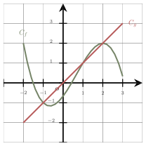
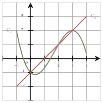

Fonctions, équations et statistiques
QCM à réponse unique — choisis une proposition pour révéler la correction immédiatement.
Même QCM, sans correction — ton score apparaît une fois toutes les questions complétées.
On cherche d’abord la valeur de $b$ en utilisant la condition donnée dans l’énoncé.
$A(2~;~-13)$ appartient à $\mathscr{D}$ signifie que $g(2)=-13$.
On a donc $g(x)=-3x-7$. L’image de $1$ par cette fonction correspond à l’ordonnée du point de $\mathscr{D}$ dont l’abscisse est $1$ :
$$\begin{aligned} g(1)&=-3\times 1-7\\ &=-3-7\\ &=-10 \end{aligned}$$La bonne réponse est la réponse D.

L’ensemble des solutions de l’inéquation $f(x)< g(x)$ est :À l’aide d’une factorisation, on obtient :
$$\begin{aligned} 0{,}63a-2a &=(0{,}63-2)a\\ &=-1{,}37a \end{aligned}$$La bonne réponse est la réponse B.
On développe, puis on isole l’inconnue dans le membre de gauche :
$$\begin{aligned} 7(6x-6)&=-3x-9\\ 42x-42&=-3x-9\\ 42x-42+3x&=-3x-9+3x\\ 45x-42&=-9\\ 45x-42+42&=-9+42\\ 45x&=33\\ x&=\dfrac{33}{45} \\x&=\dfrac{11}{15}\end{aligned}$$La solution est $\dfrac{11}{15}$.
La bonne réponse est la réponse D.
Voici les $4$ notes sur vingt obtenues par un élève en mathématiques :
$$\begin{array}{|c|c|c|c|c|} \hline \text{Devoir} & 1 & 2 & 3 & 4\\ \hline \text{Note} & 10 & 13 & 14 & x\\ \hline \text{Coefficient} & 1 & 1 & 1 & 2\\ \hline \end{array}$$On cherche ce que doit valoir $x$ pour que la moyenne de l’élève soit égale $15$.
Pour déterminer la moyenne de l’élève, on calcule :
• La somme des produits de chaque note par son coefficient :
$10 \times 1 + 13 \times 1 + 14 \times 1 + x \times 2 = 37 + 2x$.
• La somme des coefficients : $1 + 1 + 1 + 2= 5$.
Remarque : On fera bien attention à ne pas utiliser la ligne des numéros de devoirs du tableau, donnée qui n’intervient pas dans le calcul de la moyenne.
La moyenne est donc égale à $\dfrac{37 + 2x}{5}$.
Comme elle doit être égale à $15$, on doit résoudre l’équation suivante :
La bonne réponse est la réponse D.

L’ensemble des solutions de l’inéquation $f(x)\leqslant g(x)$ est :Voici les $4$ notes sur vingt obtenues par un élève en mathématiques :
$$\begin{array}{|c|c|c|c|c|} \hline \text{Devoir} & 1 & 2 & 3 & 4\\ \hline \text{Note} & 14 & 11 & 15 & x\\ \hline \text{Coefficient} & 1 & 1 & 1 & 2\\ \hline \end{array}$$On cherche ce que doit valoir $x$ pour que la moyenne de l’élève soit égale $16$.